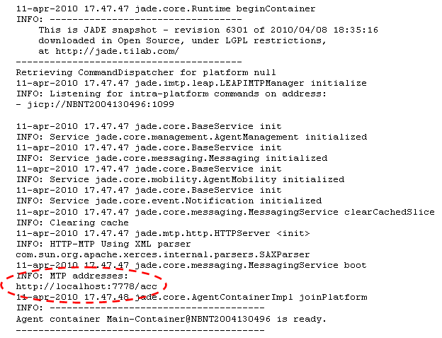
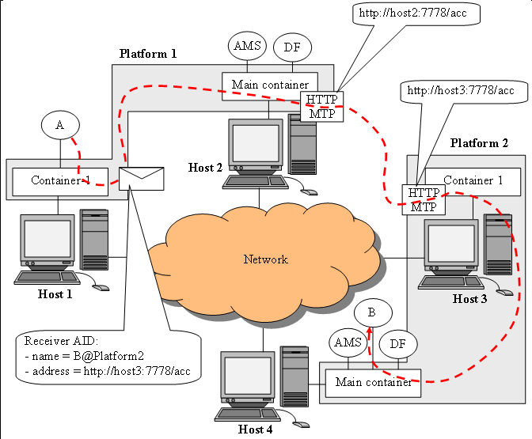
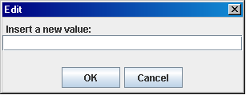
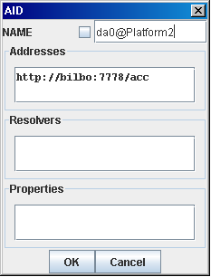
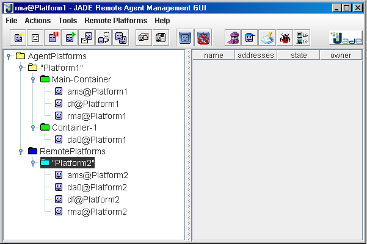

Table of contents
Previous
Tutorial 4. Running multiple JADE platforms
In Tutorial 2 and 3 we saw a single JADE platform consisting of one Main Container and a number
of peripheral containers running locally as well as on remote computers. We also mentioned that agents
living in the same platform (no matter if they are in the same or in different containers) communicate
by sending messages and indicating the name of the receiver(s) is sufficient for a message to be delivered
correctly. In this tutorial we will show how
to start multiple JADE platforms and we will make agents belonging to different platforms communicate.
As we will describe later in this section, for this to work properly it is necessary that the AID of the
receiver of a message includes, beside the receiver's name, at least one transport address of the
receiver's platform.
MTP
Inter-platform communication, i.e. communication between agents living on different platforms, is
based on modules called MTP (Message Transport Protocol). Such modules are able to marshal/un-marshal and
transmit ACL messages according to the FIPA specifications. In this way JADE
agents are able to communicate with agents living on remote platforms regardless of whether these are
other JADE platforms or different platforms (possibly developed with a different programming language)
provided that they are FIPA compliant. FIPA specifies how to transfer ACL messages over three well known
transport protocols: HTTP, IIOP (the transport protocol defined in CORBA) and SMTP. JADE provides
suitable MTPs for HTTP and IIOP only.
MTP modules can be installed in whatever container and a container can have zero or more MTP modules
installed in it. By default JADE installs the HTTP MTP in a Main Container and no MTP on peripheral containers.
Actually if you go back to the output generated by JADE when we started the Main Container in
Tutorial 2 we can see that an MTP listening for messages from remote
platforms on port 7778 was activated as highlighted below.

If you look at the output of a peripheral container you will notice that no MTP was installed. This default
behaviour can be changed by means of the -mtps <MTP-class-name-list> option that allows
specifying which MTP modules to start in each container. Furthermore the -nomtp option tells
JADE not to start any MTP in the Main Container.
Agents running in a Container with no MTP are able to communicate with agents in remote platform anyway since
JADE routes messages directed to foreign agents to the first container hosting a suitable MTP as depicted
Figure 1.

Figure 1. Message routing to/from MTP modules
The scenario depicted in Figure 1 involves 2 platforms: Platform1 composed of the Main Container,
running in host2 and hosting an HTTP MTP, and a peripheral container called Container-1
running in host1 and holding agent A.
Platform2 on its turn is composed of the Main Container, running in host4 and holding agent
B and a peripheral container (Container-1), running in host3 and hosting an
HTTP MTP. Note that there is no conflict between the names of the two peripheral containers (both called
Container-1) since they belong to different platforms.
When agent A sends a message to agent B it specifies both the name of the receiver
B@Platform2 and, since B lives in a different platform, the transport address to deliver the message
to B's platform. When the JADE message transport system manages such message it first look at the receiver's
name (B@Platform2) and detects that it lives in a remote platform. Then it gets the address
(http://host3:7778/acc) and sees that an HTTP MTP is needed. As a consequence it routes the
message to the first container hosting an HTTP MTP (the Main Container in the depicted scenario). The MTP
will deliver the message to the remote end-point according to the FIPA specifications. The HTTP MTP in
Container-1 of Platform2, receiving the message, looks at the receiver's name and delivers the
message to the Main Container where B actually lives. All these steps are fully managed by JADE.
User do not need to care about them in anyway.
Starting 2 platforms
Let's assume we have the two network-connected hosts mentioned in Tutorial 3:
frodo and bilbo (of course you can do the same experiment on a single computer; in this
case remember to specify different local ports for the Main Containers of the 2 platforms).
In order to start from a clean situation, shut down all JADE instances (if any) still running from previous
tutorials.
- Launch a platform Platform1 in frodo composed of
the Main Container plus a peripheral container:
- Main Container: Open a shell, move to the jade directory and type
java -cp lib\jade.jar jade.Boot -gui -platform-id Platform1
The RMA Management Console appears.
- Peripheral Container: Open another shell, move to the jade directory and type
java -cp lib\jade.jar jade.Boot -container
- Launch a platform Platform2 in bilbo composed of
the Main Container only:
- Main Container: Open a shell, move to the jade directory and type
java -cp lib\jade.jar jade.Boot -gui -platform-id Platform2
The RMA Management Console appears.
Inter-platform communication in practice
Now, using the RMA in Platform1 (i.e. in host frodo), start a DummyAgent in container
Container-1 of Platform1 as described in Tutorial 2. Similarly,
using the RMA in Platform2 (i.e. in host bilbo), start a DummyAgent in the Main Container
of Platform2. Note that both DummyAgents have the same local name da0. Again this is not
a problem as their actual names are different: da0@Platform1 and da0@Platform2.
Now from the Platform1 DummyAgent try to send a message to the Platform2 DummyAgent. In
Platform1 DummyAgent GUI
- Select a suitable communicative act e.g. INFORM
- Insert some content e.g. Hello!
- Right-click in the Receivers text field and select the Add menu item: the AID Editing
dialog box should appear
- Insert the receiver's name da0@Platform2 in the NAME text field. Do not check the
local name check box! This is a global name.
- Right-click in the Addresses text field and select the Add menu item: the Edit Address
dialog box depicted in Figure 2 should appear.

Figure 2. The Edit Address dialog box
- Insert the receiver's address i.e. the address of Platform2. You can get it from the output of
Platform2 Main Container; it should be http://bilbo:7778/acc
- Click OK. You should have now the AID Editing dialog box looking like that depicted in
Figure 3.
- Click OK in the AID Editing dialog box and finally click the Send Message
button in the DummyAgent GUI.

Figure 3. The AID Editing dialog box filled for inter-platform communication
Adding remote platforms in the RMA GUI
You will notice a menu entry in the RMA Management Console called Remote Platforms. If you click it
you see two ways of adding a remote platform to the JADE Management Console. It is important to note that
adding a remote platform to the RMA GUI does not affect in any way the fact that agents in the local platform
can communicate with agents in the remote platform (actually we shown this communication in the previous
section of this tutorial). The Add Platform operation just allows viewing the agents of the added
remote platform in the RMA Management GUI of the local platform.
The easiest way to add a remote platform is Add Platform via AMS AID:
If you select this menu item you get a window which allows you to enter the AID (global name and address) of
the remote platform AMS. By definition (according to the FIPA specifications) the AMS of a platform is called
ams@<platform-name>. So if we want to add platform Platform2 to the Management Console
of platform Platform1 we should edit the AID Editing dialog box as in Figure 4.

Figure 4. The AID Editing dialog box filled for adding a platform via AMS AID
Click on the OK button and you'll see Platform2 appearing in the RMA tree. Right-click
on Platform2 and select the Refresh Agent List menu item: you should get a situation similar
to that depicted in Figure 5.

Figure 5. A remote platform in the Management Console
Note that containers of the remote platforms are not shown. This is because the information about
a remote platform are retrieved from the remote platform AMS in compliance with the FIPA specifications and
Containers are a JADE abstraction, not a FIPA one.
Table of contents
Previous